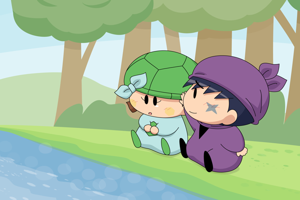

はあ、と深くため息を吐いたカメリは、己の"コンプレックス"について深く悩んでいた。
というのも、彼女は他の皆とは違って、些か喋るのが遅かった。
今日も、そのコンプレックスのせいで周りのクラスメイト達を困らせてしまっていたようで、カメリはどうしたらこの弱点というものを治せるんだろうかと、悩み、落ち込んでいたのだ。
「（こんなんじゃ～、みんなに～嫌われちゃうよ～……）」
そんなの、絶対に嫌だ。どうしたら、このゆっくりと喋ってしまう癖というものは治せるんだろう。カメリはじわり、と瞳に涙を滲ませながら、そんなことを妖精界のとある土手で考えていた。
「あれ？カメリだぜー」
そんな時だった。同級生で、クラスメイトの１人でもあるサスケが、１人ぽつんと座っているカメリへと声をかけたのだ。
「サスケくん～……」
今日は、ハンゾーくんと一緒じゃないの？と、そう言う前にサスケがにっこりとほほ笑みながら「ハンゾーなら、今一緒じゃないんだぜ」とそう笑って、カメリの横へと座ったのだった。
サスケは、カメリの言いたい事をいち早く察して、その言葉を理解したうえで返事をしてくれる。そんなサスケに何度も助けられたカメリとしては、うれしい反面、なんだか申し訳なくなってしまうのだ。
うる、とまた瞳に涙を浮かばせて、カメリは顔を下へとうつむかせた。
今はまだ、いいかもしれないけど。もし、サスケくんやハンゾーくん、そして親友でもあるパピィにまで愛想をつかされてしまったら、とおもうと。
カメリはとうとう、ポロリと涙を流してしまった。
「え！？か、カメリ！？」
どこか痛いのかだぜ！？と、あわあわとするサスケに対し、カメリはふるふると首を横に振った。違うの、と声に出そうとしても、思うように声に出せなかったからだ。
「じゃあ、なんか悲しいことでもあったのかだぜ？」
そう真剣に聞いてきたサスケの顔がいつもよりも少し近くに感じ、カメリは恥ずかしくなって、少し視線を横にそらした。そして、返事の代わりに再度首をふるふると横に振ると、サスケは少し困ったような表情をした後、おずおずとしながらもカメリの頭を優しく撫でたのだった。

その優しい手つきが、なんだかとても暖かくて。カメリはそんなサスケの行為に、ほっと安心したのか、目をぎゅっとつぶると「あのね、」と声に出した。
「わ、わたし……こんなしゃべり方だから～……」
「……うん、」
「み、みんなに～……迷惑かけちゃって～……」
「……」
「き、嫌われちゃったらどうしようって、そんな事考えちゃって～…」
「そっか……だから、さっき泣いちゃったんだぜ？」
「う、うん～……それに～…わたし、いっつもサスケくんに～……めいわく、かけちゃって～……」
「そんな事、気にしなくていいのにだぜ！…ああ、だからさっきおいらが遮ってしゃべった時、悲しそうな顔したのかだぜ？」
「……うん」
しょんぼりとしながら、カメリはぎゅっと自分自身の体を抱き寄せる。そんなカメリに、サスケは「うーん」と考えながら、ぽつり、と言葉を漏らした。
「要は、そのゆっくりとした口調を治したいのかだぜ？」
「うん……」
こくん、と頷いたカメリにサスケは再度考え込むように「ん～」と言いながら空を仰いだ。
「カメリ、ここからはおいらの独り言のようなものなんだけど……、」
「？」
「おいらとハンゾーは、なんていうか……ものすごーくおっちょこちょいで、ノロマで、正直忍者って柄じゃないって、何度も言われてきたんだぜ。もちろん、おいらもハンゾーも自分の悪い所を治そうって頑張ったんだぜ。……でも、結局１人じゃなにもできなくて、なにも治せなかった。そんなときに、おいら達は兄貴と出会ったんだぜ。……兄貴は、おいら達がどんなに出来損ないで、役に立たなくっても。それでも、「よくやった」「次は頑張ろう」って笑って許してくれたんだぜ」
にこっと、笑ったサスケにカメリはきょとんとした表情で見つめた。
サスケはそんなカメリを気にせず、つらつらと自分の"独り言"を続けたのだった。
「そんな兄貴に、おいら達は色々助けてもらったんだぜ。もちろん、ハンゾーもおいらを助けてくれたし、おいらもハンゾーを助けてあげたりしたこともあったんだぜ。……だから、もしカメリがまた、何かしで失敗しちゃったり、悲しいことがあったらおいらたちにどーんと任せるんだぜ！」
「サスケくん……」
「もっと普通に喋れるようになったら、それはそれで良いとは思うんだぜ？でも、今すぐにそうやって治そう治そう、って思ってても、人生楽しくならないと思うんだぜ」
「でも……、みんなに「迷惑なんか、ちっとも思ってないんだぜ！」……！」
「周りのやつらが、どうとかおいらは知らないけど。でも、おいらは少なくともちっとも迷惑なんて思ったこと、ないんだぜ！あと、パピィとハンゾーも！！」
だから、あせらずゆっくりでいいんだぜ！
そう笑ったサスケに、カメリはまた、泣きそうになるのを堪えて、今度は笑顔で「ありがとう～」とそう言った。
サスケは照れくさそうに頬を指でかいた後、元気になったクラスメイトにほっと胸をなでおろした。
「もし、周りの奴らがその理由でカメリをいじめるなら、おいらやハンゾー、それにパピィだって黙ってなんかいないぜ！！その時は３人で、そいつらぎったんぎったんにしてやるんだぜー！」
「ふふ、暴力は～、だめだよ～……でも、ありがとう～！」
「……！お、おうなんだぜ！も、もう日が暮れてきたし、早く帰るんだぜ！！」
「うん～！」
そう言って二人は、夕焼けに染まった帰り道を、二人で肩を並べて歩いた。
辺りが夕日色に染まる中、カメリとサスケの頬はほんのりと、赤くそまっていたのであった。
ゆっくりでいいんだよ
▼
こやまるさん、ハッピーバースディ！
というわけで、リクエストのサスカメでした！！
こやまるさん宅ではこの２人の物語が描かれていますが、もう可愛くって可愛くってしゃーないですね！！
あの２人の可能性を見出したこやまるさんは神です……！！
相互もさせていただいてるので、今後ともよろしくです！
みりん
- ナノ -
(2014/6/15)